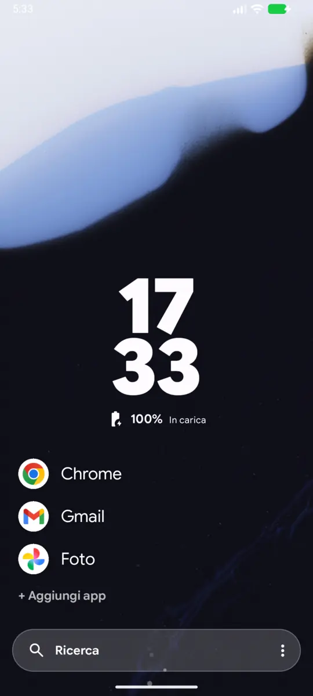
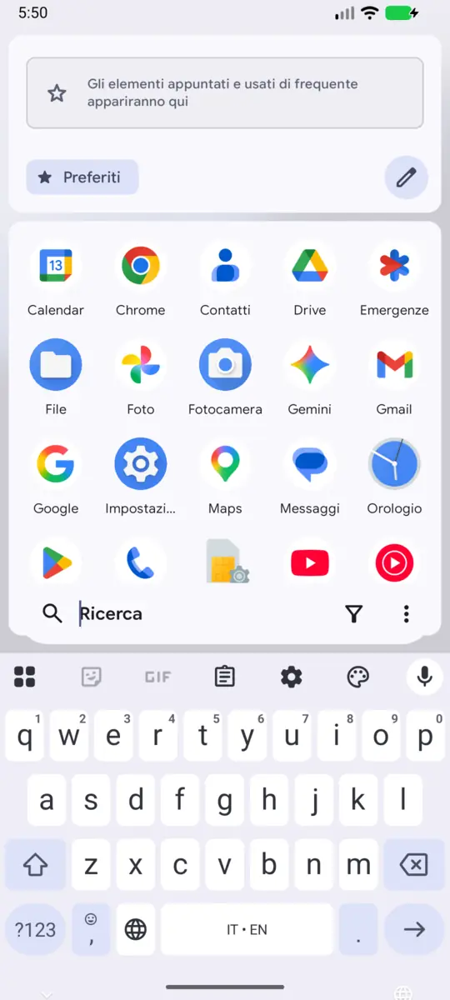
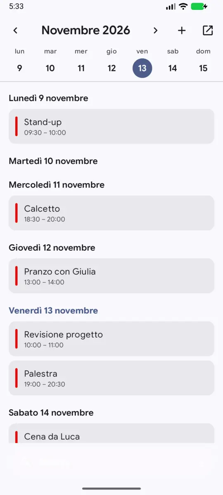
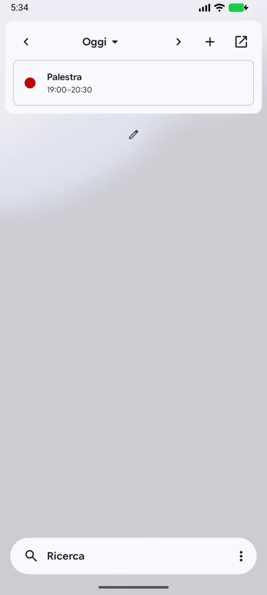

Trafitto Launcher
Veloce, utile e moderno. In poche parole, tuo.
Fork di: Kvaesitso di MM2-0
È una fork personale e non ufficiale: la modifico a mio gusto e per le mie necessità, un pezzo alla volta. Non è affiliata al progetto originale né supportata da MM2-0. Tutto il merito del launcher va a lui e ai contributori di Kvaesitso; per favore non segnalate a loro i problemi di questa fork.
Cosa cambia rispetto a Kvaesitso
La stessa base, ripensata per come uso il telefono io.
- Ricerca a portata di pollice. La barra sta in basso e si apre con uno swipe verso l'alto.
- La tua settimana a uno swipe. Calendario a schermo intero, subito a destra della home.
- Widget dove servono. Pagine di widget a sinistra, quante ne vuoi.
- Le app che usi davvero, in home. Sempre lì, con l'aspetto che decidi tu.
- Animazioni ottimizzate. Più fluido, più leggero sulla batteria.




Roadmap
Più o meno quello su cui sto lavorando. Cambia spesso.
In lavorazione
- Avvio delle app che parte dall'icona. Aprendo un'app con Invio dalla ricerca, l'animazione cresce dall'icona evidenziata.
- Icone che rispondono al tocco. Leggero effetto pressione sulle icone della griglia e sulle app in home, e comparsa in dissolvenza.
- App più piccola e più rapida ad aprirsi. Ottimizzazione R8 attiva: codice da 21 a 10,8 MB, avvio a freddo circa il 10% più veloce.
Prossimamente, in ordine di priorità
- Notifiche sotto le app fissate. Un'anteprima della notifica direttamente in home, sotto l'app che l'ha mandata.
- Risultati di ricerca animati. Ogni icona si sposta al suo posto quando la lista cambia, invece di ridisegnarsi da capo.
- Avvio ancora più veloce. Un Baseline Profile dedicato a questo launcher.
- Scorrimento alfabetico. Una barra con le lettere per saltare nell'elenco delle app.
- Gesti sulle app fissate. Azioni rapide con uno swipe sull'app in home.
Non in programma
- Funzioni di intelligenza artificiale.
- Vibrazione a ogni tocco.
- Icona che si trasforma nella finestra dell'app: senza root non si può fare.